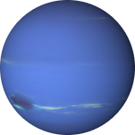

Нептун
Нептун – это восьмая и последняя по удаленности
от Солнца планета (восьмая планета Солнечной системы).
Нептун относится к ледяным гигантам и назван в честь
римского бога морей Нептуна. У Нептуна на данный
моменты обнаружены 14 естественных спутников.
Соседом Нептуна является Уран. За Нептуном начинается
область транснептуновых объектов (ТНО) – Пояс Койпера.
Так же, как у газовых гигантов Солнечной системы,
у Нептуна имеется магнитосфера.